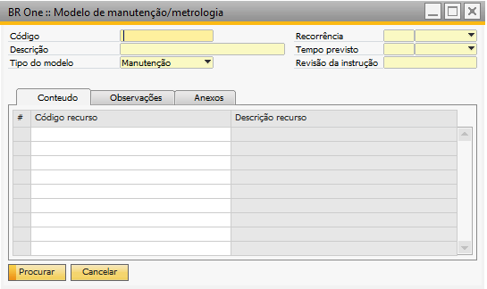
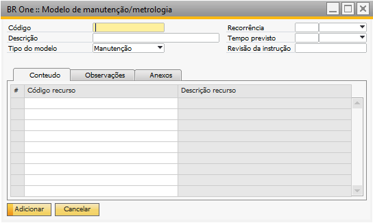
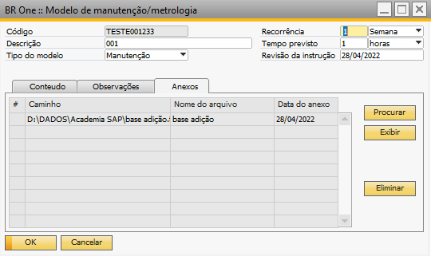

Modelo de manutenção/metrologia
Para acessar o Cadastro de Modelo de manutenção/metrologia é necessário ir no menu:
Serviços -> Modelo de manutenção/metrologia.
A tela é aberta no modo de Procurar, para adicionar deve ativar o botão Adicionar ou Ctrl+A, a tela ficará no modo de adição:
É necessário determinar o “Código” e a “Descrição” do Modelo.


O campo “Tipo do modelo” é usado para determinar se é Manutenção ou Metrologia.

No campo “Recorrência” deve ser indicado a repetição da manutenção, pode ser definido em dia, semana ou mês.
No campo “Tempo previsto” deve ser indicado o tempo da realização da manutenção, pode ser definido por minutos, horas ou dias

No campo “Revisão da instrução” deve ser informado a data para revisão da instrução.
Aba Recursos
Nessa aba deve ser informado os recursos do tipo ferramentas/máquinas, que serão realizados as manutenção/metrologia.

Caso o seja feita a tentativa de adição de códigos de recursos duplicado, o add-on dará a seguinte mensagem de erro:
Aba Instrução de manutenção
Nessa aba é possível especificar a instrução da manutenção, podendo colocar imagem do passo a passo do processo.
Essas informações são levadas para a ordem de manutenção criadas com base no modelo.

Aba Anexos
Nessa aba é possível colocar os anexos relacionados ao modelo e serão levados para a ordem de manutenção criadas com base no modelo.
